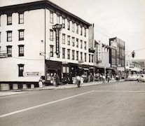

Who We Are
A Story of Two Brothers with a Dream
A Long, Long Time Ago...
 In the heart of Carbon County, a once bustling coal region, two brothers named Thomas and Jerald Mertzer opened a small business to serve the area's hardworking miners and tradesmen. Opened in 1939, T&J Hardware's quickly became a staple in the community. Located, as it is today, at 431 North First Street, Lehighton, Pennsylvania, T&J Hardware is the only hardware store in the area that offers a full line of tools and equipment. We are proud to be a part of the community and look forward to serving you.
Vestibulum ultrices risus velit, sit amet blandit massa auctor sit amet. Sed eu lectus sem. Phasellus in odio at ipsum porttitor mollis id vel diam. Praesent sit amet posuere risus, eu faucibus lectus. Vivamus ex ligula, tempus pulvinar ipsum in, auctor porta quam. Proin nec dui cursus, posuere dui eget interdum. Fusce lectus magna, sagittis at facilisis vitae, pellentesque at etiam. Quisque posuere leo quis sem commodo, vel scelerisque nisi scelerisque. Suspendisse id quam vel tortor tincidunt suscipit. Nullam auctor orci eu dolor consectetur, interdum ullamcorper ante tincidunt. Mauris felis nec felis elementum varius.
Serving Our Community
Today, the store is still family owned and operated. After serving the community for over 40 years, Thomas and Jerald handed the reigns to Thomas's son, Thomas Jr. In his last year of service, Thomas Jr. served as the store's manager and owner. Thomas Jr. has been serving the community since his birth.
Etiam iaculis nulla ipsum, et pharetra libero rhoncus ut. Phasellus rutrum cursus velit, eget condimentum nunc blandit vel. In at pulvinar lectus. Morbi diam ante, vulputate et imperdiet eget, fermentum non dolor. Ut eleifend sagittis tincidunt. Sed viverra commodo mi, ac rhoncus justo. Duis neque ligula, elementum ut enim vel, posuere finibus justo. Vivamus facilisis maximus nibh quis pulvinar. Quisque hendrerit in ipsum id tellus facilisis fermentum. Proin mauris dui, at vestibulum sit amet, auctor bibendum neque.